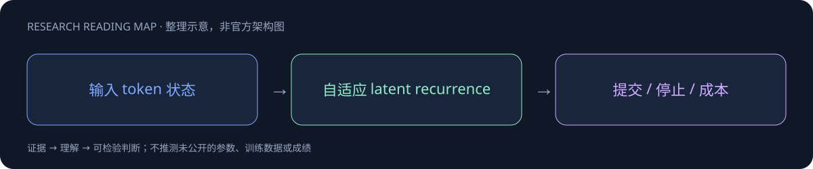

ALoDLM

一页速览
| 维度 | 当前证据 |
|---|---|
| 发布时间 | 2026-10（确切日期待核实，未计入精确30日表） |
| 类型 | 专项支线 / family · Diffusion Research |
| 关键事实 1 | 1.7B / 8B family |
| 关键事实 2 | 8B平均80.3（11项） |
| 关键事实 3 | CC BY-NC 4.0 |
| 检查日期 | 2026-10-13；官方原始资料在同级src/ |
给不同位置分配不同计算量
不是标准“一次从左到右预测”或纯并行掩码扩散，而是持续latent recurrence与token级自适应停止。模型可以对困难位置多思考，对已有足够证据的位置早停；训练把计算分配视为潜变量，用ELBO近似处理停止分布。

两种推理模式不能混报
能力模式每pass提交一个token；吞吐模式并行提交，按entropy选择。8B官方评测均分80.3，对照AR Qwen78.5，HumanEval87.8、GSM94.2、GPQA49.5。配置窗口16，q值在1.7B与8B不同（0.4/0.5）。比较应固定任务、计算预算与模式，不能把能力模式分数和吞吐模式速度合成同一个不存在的运行点。
研究启发
自适应计算对Agent困难决策点有吸引力，但需要评估计算分配是否真的对应不确定性。应记录每token recurrence次数、墙钟延迟、总FLOPs、失败位置和错误自信；也要检测提前提交是否破坏工具JSON与长程规划一致性。
授权CC-BY-NC4.0，并非商用自由授权。technical report另列链接，本轮未下载PDF。HF创建10月2日只能证明仓库存在，正式首发日未证实，暂记10月并列入日期待核实。
对 Agent Training 的启发
以上是基于已读官方资料的研究判断，不是官方保证，也没有在本机运行模型推理或复现论文成绩。下一步优先补独立验证器、固定任务/版本和完整失败轨迹，避免只保存最好样例。
一手资料与导航
- [S1] HF Model Card
原始下载文件与SHA-256见 抓取记录。报告保留链接，不抓PDF；动态网页响应若只有壳文件，不将其标成完整离线正文。
📊 相关可视化: ALoDLM 中文Poster